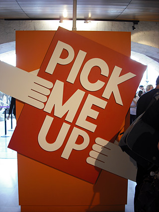
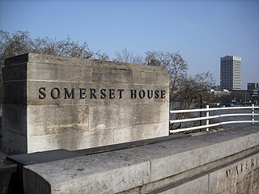
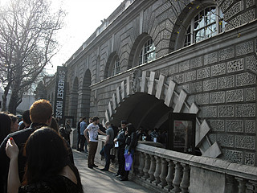
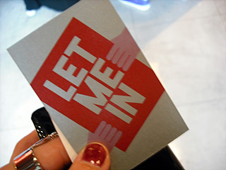
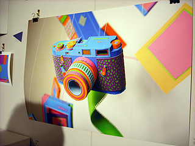
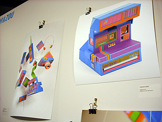
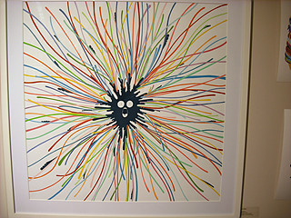
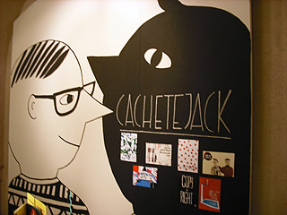
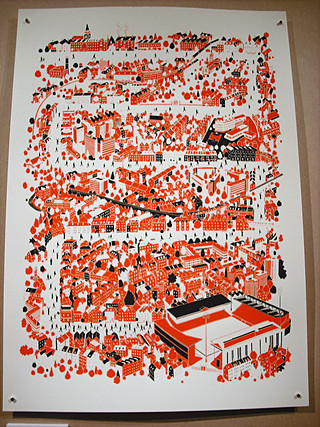
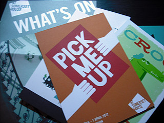

Contemporary Graphic Art Fair
Somerset House


회사에서 우연히 광고포스터 보고
급 결정!! 장소도 코벤트가든역에서 걸어갈수있는곳 +_+
갑자기 오늘 날이 너무 더워서;;;
가죽자켓입고 나갔다가 이건아니다 싶어서 집에돌아와서
옷갈아입고
역근처까지 가서 지갑 두고나왔다는거 깨닫고
다시 돌아가서 지갑들고 나왔음 ;ㅂ;
출발하기도전에 지쳤다............OTL
그리고 도착해보니 웬 줄이;;;;;
거진 한시간 기다린듯;;;;;;

전시는 4월1일까지
회사근처겠다 매일 늦게까지 열겠다
몇번 더 올까싶어서 Multiple Entry Pass를 끊었다 +_+





전시보니까 학교다닐때 생각난다 ;ㅂ;
학교졸업하고 나서 젤 궁한건 역시 프린트메이킹 이랑 도서관 ;ㅂ;
수많은 디자인관련 서적/잡지가 다달이 알아서(?) 갱신되는
그 훈늉함!!! 매달 꼬박꼬박 다 챙겨봤었는데 ;ㅂ; 흑
여기저기 워크샵하는곳도 많고 다들 자기스튜디오에서
소형 프린트머신 들고와서 이것저것 만들고있는데
나도 갖고싶어~~ ;ㅂ;
날도 갑자기 봄도 아닌 여름날씨였겠다
토요일 낮의 센트럴은 정말 갈곳이 못된다.......OTL
+
요즘 여기저기 전부 공사중이라 원래 복잡한 동네에
공사까지 겹쳐서 이건 머 대책없다;;
얘네 진짜 이 공사들 전부 올림픽전에 끝낼수 있을려나 ㅡㅡ;;;
난 힘들거라고 봐;;;;;;;;;;
회사건물 바로 옆도 끊임없이 공사중인데
(그리고 이 공사는 분명 작년 10월에 끝난다고 난 들었었다 ㅋㅋㅋ)
가게 오픈 예정일이
작년 10월
↓
올해2월
↓
우리 이번 여름에 오픈해요~soon~!!
일케 변해가는걸 지켜보는 재미가 쏠쏠하다 ㅡㅡ;;;;

역시 이런 이벤트 댕겨오면 마구 불타오르는 창작의욕 +_+
낼은 커피숍가서 이것저것 끄작여볼테다
그나저나 런던도 낙서모임이나 뭐 이런거 하나 있었음 좋겠다 ;ㅂ;
커피숍에 모여서 그림그리는사람들 수다떨면서 끄작끄작끄작끄작~
찾아보면 나올려나;; 쩝;;
Pick Me Up 홈페이지